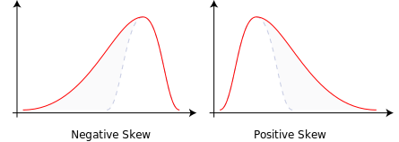
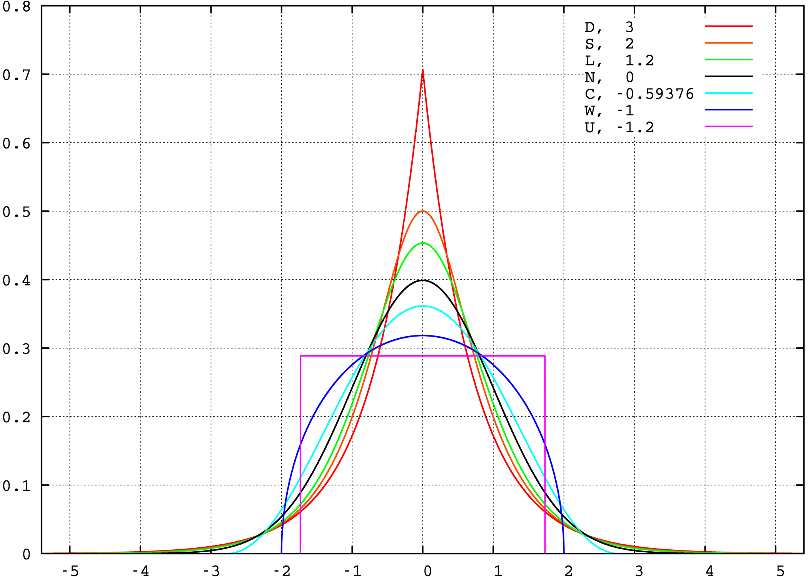
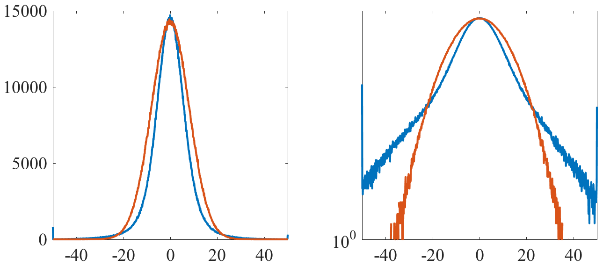
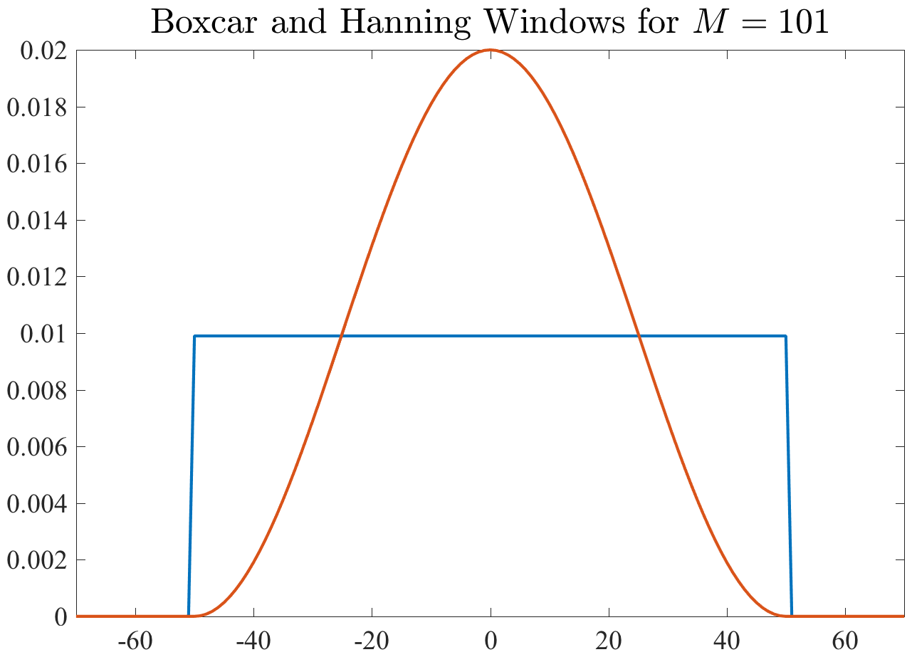
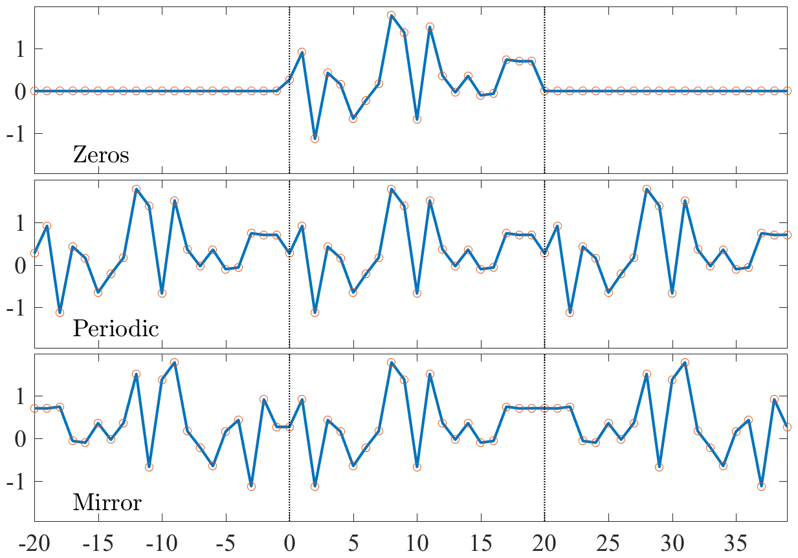
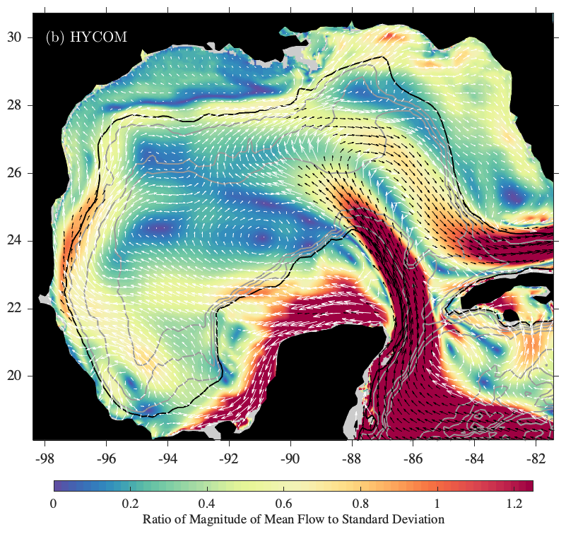
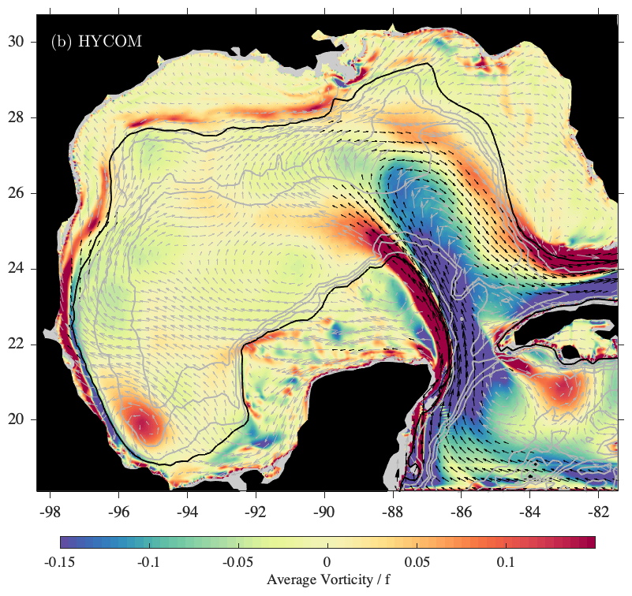
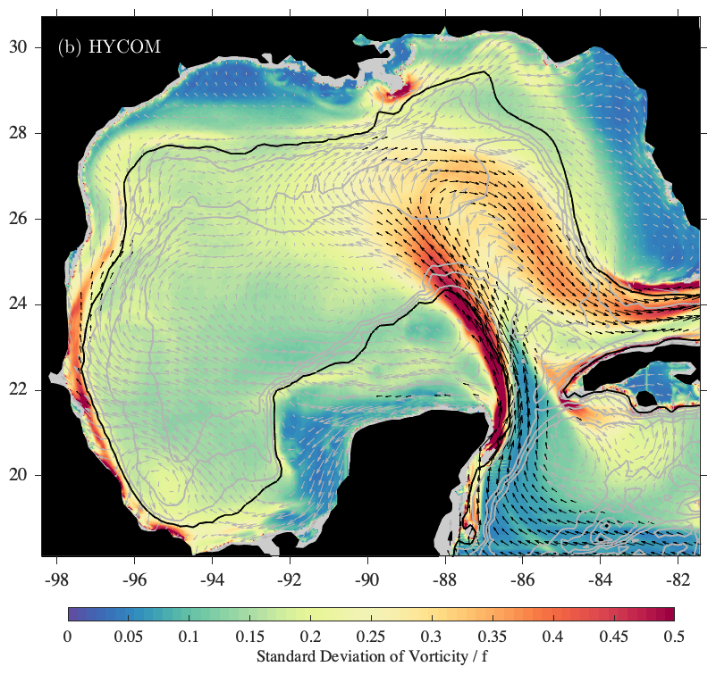
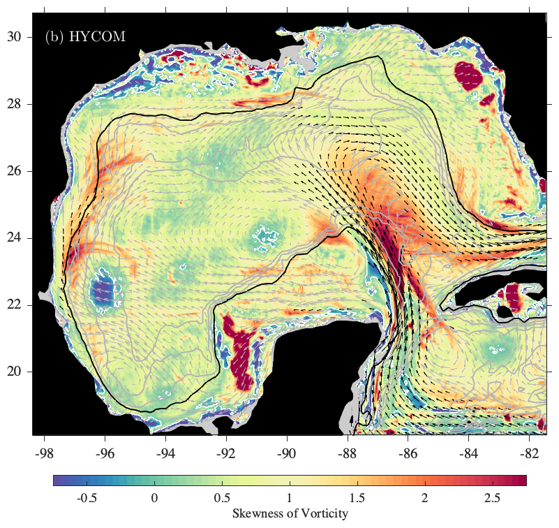

name: thetimedomain class: center,middle, .toc[[✧](../index.html)] .title[The Time Domain] --- class: left, .toc[[✧](../index.html)] # The Sample Interval We have a sequence of `$N$` observations `\[z_n, \quad\quad n=0,1,2,\ldots N-1\]` which coincide with times `\[t_n, \quad\quad n=0,1,2,\ldots N-1.\]` <!--It is a little strange to start counting at zero, but this makes life easier later.--> The sequence `$z_n$` is called a *discrete time series*. It is assumed that the *sample interval*, `$\Delta$`, is constant `\[t_n=n\Delta \]` with the time at `$n=0$` defined to be `$0$`. The *duration* is `$T=(N-1)\Delta$`. If the sample interval in your data is not uniform, the first processing step is to interpolate it be so. --- class: left, .toc[[✧](../index.html)] # The Underlying Process A critical assumption is that there exists some “process” `$z(t)$` that our data sequence `$z_n$` is a *sample of*: `\[z_n=z(n\Delta), \quad\quad n=0,1,2,\ldots N-1.\]` Unlike `$z_n$`, `$z(t)$` is believed to exist for *all times*. (i) The process `$z(t)$` exists in *continuous time*, while `$z_n$` only exists at *discrete times*. (ii) The process `$z(t)$` exists for *all past and future* times, while `$z_n$` is only available over a certain time interval. <!--The process `$z(t)$` represents an idealized physical process that continues for all times.--> It is the properties of `$z(t)$` that we are trying to estimate, *based on* the available sample `$z_n$`. --- class: left, .toc[[✧](../index.html)] # Measurement Noise In reality, the measurement device and/or data processing probably introduces some artifical variability, termed *noise*. It is more realistic to consider that the observations contain samples of the process of interest, `$z(t)$`, *plus* some noise `$\epsilon_n$`: `\[z_n=z(n\Delta)+ \epsilon_n, \quad\quad n=0,1,2,\ldots N-1.\]` This is an example of the *unobserved components model*. This means that we *believe* that the data is composed of *different components*, but we cannot observe these components individually. The process `$z(t)$` is potentially obscured or degraded by the limitations of data collection in three ways: (i) finite sample interval, (ii) finite duration, (iii) noise. Because of this, the time series is an *imperfect* representation of the real-world processes we are trying to study. <!--Q: What are some examples of measurement noise?--> --- class: left, .toc[[✧](../index.html)] # A Pair of Time Series In oceanography we often have a *pair* of time series `$x_n$` and `$y_n$`. Such data is called *bivariate*, meaning that it is consists of two variables. These may represent horizontal velocity (as in current meters) or displacement (floats or drifters). Bivariate data can be thought of as a vector having two elements: `\[\mathbf{z}_n=\begin{bmatrix} x_n \\ y_n \end{bmatrix}.\]` <!--In Matlab, we will represent this vector as an array having `$N$` *rows* and two *columns*. Time is always in the first dimension, the rows!--> The subscript `$n$` here refers to `$n$` different copies of the vector, *not* to the elements of that vector! Alternatively, we can also think of this data consisting of a single *complex-valued* time series `$z_n\equiv x_n + i y_n,$` where `$i\equiv\sqrt{-1}$.` Vector and complex notations will both be discussed in detail later. --- class: left, .toc[[✧](../index.html)] # Time versus Frequency There are two opposite points of view regarding the time series `$z_n$`. The first regards `$z_n$` as being built up as a sequence of discrete values `$z_0,z_2,\dots z_{N-1}$`. This is the domain of *statistics*: the mean, variance, histogram, etc. When we look at data statistics, generally, the order in which the values are observed *doesn't matter*. The second point of view regards `$z_n$` as being built up of sinusoids: purely periodic functions spanning the whole duration of the data. This is the domain of *Fourier spectral analysis*. In between these two extremes is wavelet analysis. This lecture will focus on what can be done in the time domain. --- class: left, .toc[[✧](../index.html)] # Time-Domain Statistics A good place to start is with the very simplest tools. We'll change to `$x_n$` and `$x(t)$` as this discussion pertains to real-valued data. The *sample mean* describes a “typical” value: `\[\overline{x} \equiv \frac{1}{N}\sum_{n=0}^{N-1} x_n\]` The *sample variance* gives the spread about the mean: `\[\sigma_x^2 \equiv \frac{1}{N}\sum_{n=0}^{N-1} \left(x_n-\overline{x}\right)^2\]` “Sample” here means that it is computed from the observed data, as opposed to being a property of the assumed underlying process `$x(t)$`. The mean and variance are called the first two *moments* of the distribution of values associated with the process. --- class: left, .toc[[✧](../index.html)] # Skewness The *skewness* describes the tendency for an *asymmetry* between positive excursions and negative excursions: `\[\gamma_x \equiv \frac{1}{\sigma_x^3}\frac{1}{N}\sum_{n=0}^{N-1}\left(x_n-\overline{x}\right)^3\]` <center></center> --- class: left, .toc[[✧](../index.html)] # Kurtosis The *kurtosis* is said to either measure *peakedness* (concentration near `$\overline{x}$`), or a tendency for *long tails* (concentration far from `$\overline{x}$`): `\[\kappa_x \equiv \frac{1}{\sigma_x^4}\frac{1}{N}\sum_{n=0}^{N-1}\left(x_n-\overline{x}\right)^4\]` Actually, it measures both. Kurtosis is a measure of the spread of `$x_n$` about the *two points* `$\overline{x} \pm \sigma_x$`. This can happen *either* for peakness *or* for long tails! .cite[See Moors (1986), “The Meaning of Kurtosis”.] Because the value of kurtosis for a Gaussian process can be shown to be equal to 3, one sometimes encounters the *excess kurtosis* `\[\tilde\kappa_x \equiv \kappa_x -3.\]` Values of `$\tilde\kappa_x\gt 0$` mean the data is *more kurtotic*—peaked or long-tailed—than a Gaussian, while `$\tilde\kappa_x\lt 0$` means it is less so. --- class: center, .toc[[✧](../index.html)] # Illustration of Kurtosis Distributions corresponding to different values of excess kurtosis. <center></center> Positive excess kurtosis corresponds to long tails and peakedness. --- class: left, .toc[[✧](../index.html)] # Histogram The mean, variance, skewness, and kurtosis describe aspects of the *histogram*: the observed distribution of data values. <center></center> Here is the histogram of *all* SSH values from long altimeter track (blue), versus Gaussian noise having the same variance (orange). -- Q: Is it skewed? Is it kurtotic? --- class: left, .toc[[✧](../index.html)] #Simple Smoothing One of the most effective ways to process a time series is with a simple smoothing. Let `$g_m$` be a length `$M$` sequence, where `$M$` is *odd*, defined for `\[ -(M-1)/2,\dots,-2,-1,0,1,2,\ldots, (M-1)/2.\]` Note that we define `$g_m$` to be centered on `$m=0$`, instead of running between `$0$` and `$M-1$`. A *smoothed* version of the discrete time series `$z_{n}$` is defined as `\[ \tilde z_n= \sum_{m=-(M-1)/2}^{(M-1)/2} z_{n-m} \,g_{m}\]` where `$g_{m}$` is called the *filter* or the *smoothing window*. It is also useful to examine the *residuals* from the original, `$\breve z_n\equiv z_n-\tilde z_n$`. --- class: left, .toc[[✧](../index.html)] #Simple Smoothing Example An example of simple smoothing is a *running mean*. A five-point running mean is given by: `\[ \tilde z_n= \frac{1}{5}\left[z_{n-2} + z_{n-1}+z_n+z_{n+1}+z_{n+2}\right].\]` This is expressed by the filtration equation `\[ \tilde z_n= \sum_{m=-(M-1)/2}^{(M-1)/2} z_{n-m} \,g_{m}\]` with the choice `\[g_m =1/5, \quad\quad m= -2,-1,0,1,2.\]` The simplest choice of filter is `$g_m =1/M$`, a constant over the `$M$` points. Then the filtration defines an `$M$`-point running mean. --- class: center, .toc[[✧](../index.html)] #Choice of Filter The running mean filter `$g_m=1/M$` is called the *boxcar* or *rectangle function*. Another popular choice is the *Hanning window*.  The Hanning window is just a half-period of a cosine, offset. <!--u = .5*(1 - cos(2*pi*(0:n-1)'/(n-1)));--> --- class: left, .toc[[✧](../index.html)] #How to Choose a Filter The goal of simple smoothing is to separate relatively “fast” from relatively “slow” variability. Many functions can be used as smoothing filters. However, for a first look at the data, the details of the filter are not so important. The important thing is to define a sensible *weighted average*. The boxcar filter has sharp “edges” that can lead to artifacts, as we will see later. Also, the boxcar is highly distributed, and doesn't place emphasis on the “present time” compared to nearby times. For these reasons, the Hanning window is sometimes more appropriate for simple smoothing. In <tt>jLab</tt> simple smoothing is carried out with <tt>vfilt</tt>. --- class: left, .toc[[✧](../index.html)] #What to do at Endpoints? Smoothing runs into a difficulty near the endpoints of `$z_n$`: `\[ \tilde{z}_n= \sum_{m=-(M-1)/2}^{(M-1)/2} z_{n-m} \,g_{m}.\]` When we are within a filter half-width `$(M-1)/2$` of the beginning or end of `$z_n$`, the filter “falls off” the end of the data. Some choice must be made in order to have the smoothed version `$\tilde z_n$` of the data be well defined. There are five common choices. 1. **Truncate**: Omit affected points, such that the length of `$\tilde z_n$` will be about `$M$` points *less than* the length of `$z_n.$` 1. **NaNs**: Replace these with NaNs or *indeterminate* values. 1. **Zeros**: Set `$z_n$` equal to zero for `$n\le 0$` or `$n\ge N-1.$` 1. **Periodic**: Make `$z_n$` periodic by wrapping around the ends. 1. **Mirror**: Reflect `$z_n$` about its beginning and also about its end. --- class: center, .toc[[✧](../index.html)] #Endpoint Illustration  The *mirror* condition generally leads to the fewest “edge effects”, especially when the data is nonstationary or has a linear trend. <!--`\[z_{-1} \equiv z_{N-1},z_{-2} \equiv z_{N-2},\ldots\quad z_{-n} \equiv z_{N-n}\]` `\[z_{N} \equiv z_{0},z_{N+1} \equiv z_{1},\ldots\quad z_{N+n} \equiv z_{n}\]` `\[z_{-1} \equiv z_{1},z_{-2} \equiv z_{N-2},\ldots\quad z_{-n} \equiv z_{N-n}\]` `\[z_{N} \equiv z_{N-2},z_{N+1} \equiv z_{N-3},\ldots\quad z_{N+n} \equiv z_{N-1-n}\]`--> <!-- class: left, .toc[[✧](../index.html)] #Statistics of Circular Data An instrument observes currents that flow (i) due north, (ii) due west, and (iii) south-southwest. What is the mean direction? `\[(90^\circ+180^\circ-45^\circ)/3=75^\circ\]` North-northeast! Wrong `\[\frac{360}{2\pi} \mathrm{angle}\left\{e^{\mathrm{i}\!\,90\times 2\pi/360 } +e^{\mathrm{i}\!\,180\times 2 \pi/360 }+ e^{-\mathrm{i}\!\,45\times 2 \pi/360 } \right\} =135^\circ\]` --> --- class: left, .toc[[✧](../index.html)] #Summary This lecture has focused on -- • Introducing the concepts of *discrete sampling*, *sample interval*, *measurement noise*, and the *underlying process*. -- • Defining the first four *moments*—mean, variance, skewness, and kurtosis—as well as the *histogram*. -- • Discussing *simple smoothing* and details of its implementation. -- My experience is that *looking at data* together with *statistics* and *simple smoothing* is maybe 50% of analyzing time series! There are more sophisticated tools that can often, but not always, be very useful in unlocking the potential of the data. However, learning how to make use of these takes a lot more work! To be continued... <!-- #In-Class Assignments 1. Compute and plot the histogram of your data. You can do this using Matlab's <tt>hist</tt> or <tt>histogram</tt> functions. (For bivariate data, do this and the next step separately for both components.) 1. Compute the sample mean, variance, skewness, and kurtosis using Matlab's <tt>mean</tt> and <tt>std</tt> functions. While you may have a <tt>skewness</tt> or <tt>kurtosis</tt> function, it's very easy to code these yourself in terms of the mean and variance, so please do that. 1. Repeat 1&2 for a realization of Gaussian white noise using <tt>randn</tt> that is set to have the same variance as your data. In what ways, if any, is your data non-Gaussian? 1. Experiment with filtering your data and <tt>vfilt</tt>. Plot the data, the filtered version, and the residual (original minus filtered) for a few choices of filter length. What choice seems most suitable for your data and why? Note if your data doesn't have noise or multiple scales of varability, try working with [{this one}](../data/mooring.mat). 1. Re-do the steps 1&2 involving the time-domain statistics, but using firstly the smoothed, and secondly the residual, versions of your data. How do the statistics change dependent upon the lowpass or highpass filtering? How do you interpret this? --> --- class: left, .toc[[✧](../index.html)] #Three Cases In general we have three types of data. 1. Gridded data 2. Dense irregular data 3. Sparse irregular data We have to approach these differently. --- class: left, .toc[[✧](../index.html)] #Gridded data With gridded data we can fruitfully analyze using two-dimensional statistics by directly averaging in different directions along a 2D, 3D, or N-D “cube” of data. Averaging can be done quickly, without explicit loops, for such data. Then we imagine turning the cube in different directions and averaging along different axes. It is often useful to split time into two dimensions. For example, lat `$\times$` lon `$\times$` time can be reorganzied to become lat `$\times$` lon `$\times$` time of year `$\times$` different years. So then averaging over the 4th dimension creates a composite year, while taking the standard deviation gives the year-to-year variability. For this, <tt>reshape</tt> and <tt>permute</tt> are useful. --- class: left, .toc[[✧](../index.html)] #Gridded data If the data is so big that we can't load it into memory all at one, then we can average by aggregating: loading one time slice in at a time, adding to a running total, then dividing by the number of slices at the end. The variance can also be computed in this way using formulas like `\[\overline{(x-\overline x)^2}=\overline{x^2}-\overline x^2.\]` So we can create the variance by creating aggregated averages of both `$\overline x$` and `$\overline{x^2}$`. The same applies to higher-order moments. We can also use <tt>twodhist</tt> and <tt>twodstats</tt> to examine distributions and averages in parameter space, e.g. the distribution of sea surface temperature vs. sea level pressure for all locations and all times. If we find find a pattern in parameter space, it can be quantified using regression analysis, if desired. --- class: left, .toc[[✧](../index.html)] #Dense irregular data For irregularly sampled (non-gridded) data, we cannot directly average, but we can use <tt>twodhist</tt> and <tt>twodstats</tt> to examine distributions and averages is sensible. If there are enough data points such these histograms are sufficiently “filled in”, we will call data “dense”. With dense irregular data, as with gridded data, we imagine the dataset to be a large multivariate “cloud”, e.g. lat `$\times$` lon `$\times$` time `$\times$` temperature `$\times$` pressure and then we use the distributional analysis to slice it in different ways, looking for patterns. It is often very useful to have two-dimensional statistics with quantities of different units on the x- and y-axes, e.g. latitude `$\times$` time. Then we can look at distributions, means, and standard deviations, etc. in this plane. --- class: left, .toc[[✧](../index.html)] #Sparse data Sparse simply means there is not very much data. Practically speaking, our approach must be different when there is not enough data to fill in a histogram. In this case, we learn a lot by employing scatter plots making creative use of size and/or color of symbols. In Matlab this is doen using <tt>scatter</tt>. --- class: left, .toc[[✧](../index.html)] #Statistics Example As an example of how to use time-domain statistics, we will look at a numerical model of the Gulf of Mexico. First consider the mean and standard deviation of the velocity `$\mathbf{z}_n(x,y)\equiv [ u_n(x,y)\,\,\, v_n(x,y)]^T$`, `\[\overline{\mathbf{z}}(x,y) \equiv \frac{1}{N}\sum_{n=0}^{N-1}\mathbf{z}_n,\quad\quad\sigma^2(x,y)\equiv \frac{1}{N}\sum_{n=0}^{N-1}\left(\mathbf{z}_n-\overline{\mathbf{z}}\right)^T\left(\mathbf{z}_n-\overline{\mathbf{z}}\right) \]` and the ratio of the mean flow magnitude to the standard deviation `\[\frac{\|\overline{\mathbf{z}}(x,y)\|}{\sigma(x,y)} = \frac{\sqrt{\overline{u}^2(x,y)+\overline{v}^2(x,y)}}{\sigma(x,y)}\]` (with `$\|\mathbf{z}\|\equiv\sqrt{\mathbf{z}^T\mathbf{z}}$`) which could be interpreted as a nondimensional measure of the *stabilty* of the flow patterns. (Model courtesy of J. Zavala-Hidalgo and colleagues.) <!--\begin{bmatrix} \overline{u} \\ \,\overline{v}\,\end{bmatrix},--> --- class: center, .toc[[✧](../index.html)] <!--#Example of Using Moments --> <img style="width:85%" src="../figures/hycom_sener_velstd.png"> --- class: center, .toc[[✧](../index.html)] <!--#Example of Using Moments -->  --- class: left, .toc[[✧](../index.html)] #Statistics Example Next we will look at the first three moments of the vorticity `\[\zeta_n(x,y)\equiv \frac{\partial v_n}{\partial x}-\frac{\partial u_n}{\partial y}\]` `\[\overline{\zeta}(x,y) \equiv \frac{1}{N}\sum_{n=0}^{N-1}\zeta_n\]` `\[\sigma_\zeta^2(x,y)\equiv \frac{1}{N}\sum_{n=0}^{N-1}\left(\zeta_n-\overline{\zeta}\right)^2 \]` `\[\overline{\gamma}_\zeta(x,y) \equiv \frac{1}{\sigma_\zeta^3} \frac{1}{N}\sum_{n=0}^{N-1}\left(\zeta_n-\overline{\zeta}\right)^3. \]` --- class: center, .toc[[✧](../index.html)] <!--#Example of Using Moments -->  --- class: center, .toc[[✧](../index.html)] <!--#Example of Using Moments -->  --- class: center, .toc[[✧](../index.html)] <!--#Example of Using Moments -->  --- class: center, .toc[[✧](../index.html)] <!--#Example of Using Moments --> <video preload="auto" width="85%" height="auto" data-setup="{}" autoplay loop controls><source src="http://jmlilly.net/videos/hycom_vorticitymovie.mp4" type="video/mp4" /></video> --- class: left, .toc[[✧](../index.html)] #Takeaway Messages The important message here is that time-domain statistics, while being an important tool, don't capture all the complex structure of the time-evolving turublent ocean. The time-domain statistics "flatten" the variability, the way a shadow flattens a three-dimensional object. They provide us with compact summaries but at the expense of compressing the rich structure. Higher-order statistics—the skewness and kurtosis—can *sometimes* reveal features that are hidden by the lower-order statistics. It's often a great idea to make an animation! --- class: left, .toc[[✧](../index.html)] #Homework 1. Compute and plot the histogram of your data. In Matlab, you can do this using Matlab's <tt>hist</tt> or <tt>histogram</tt> functions. (For bivariate data, do this and the next step separately for both components.) 1. Compute the sample mean and variance. <!--1. Repeat 1&2 for a realization of Gaussian white noise using <tt>randn</tt> that is set to have the same variance as your data. In what ways, if any, is your data non-Gaussian?--> 1. Experiment with filtering your data. In Matlab, this can be done using <tt>vfilt</tt>. Plot the data, the filtered version, and the residual (original minus filtered) for a few choices of filter length. Are there any choices that seems to be suitable for your data? 1. Re-do the steps 1&2 involving the time-domain statistics, but using firstly the smoothed, and secondly the residual, versions of your data. How do the statistics change dependent upon the lowpass or highpass filtering? How do you interpret this?